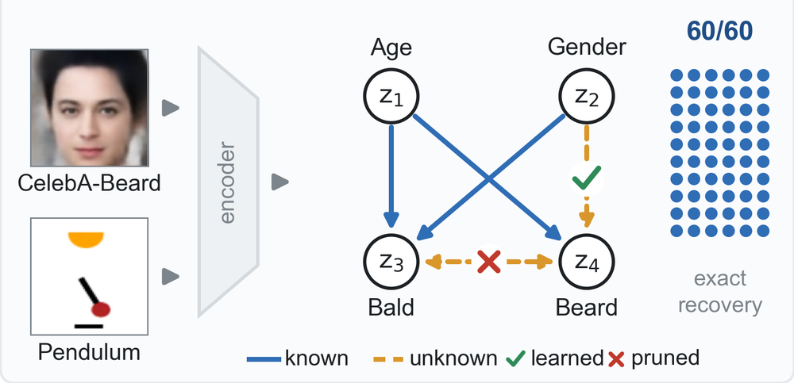
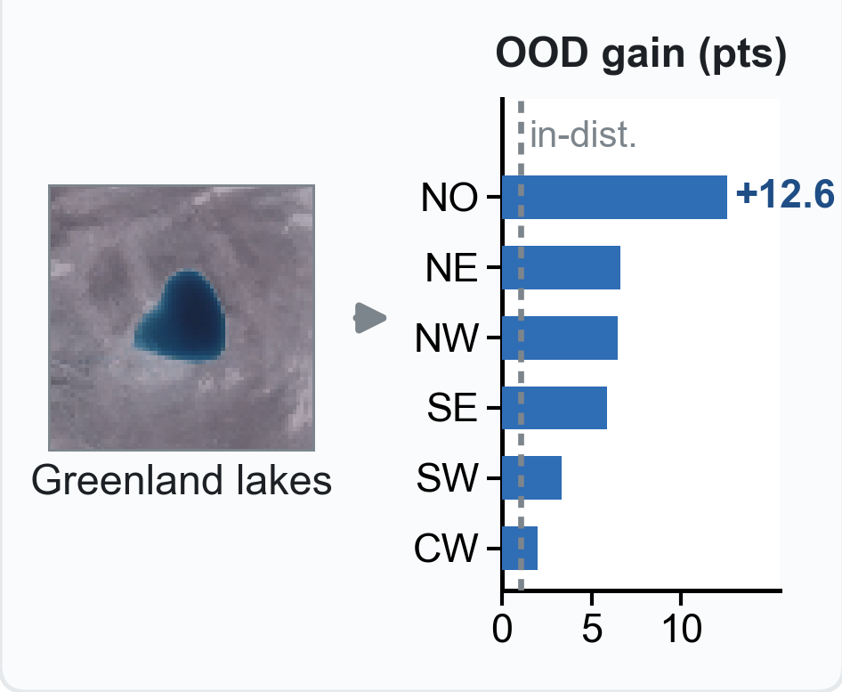
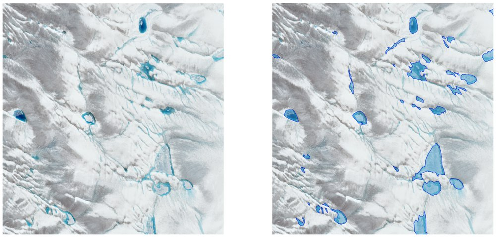
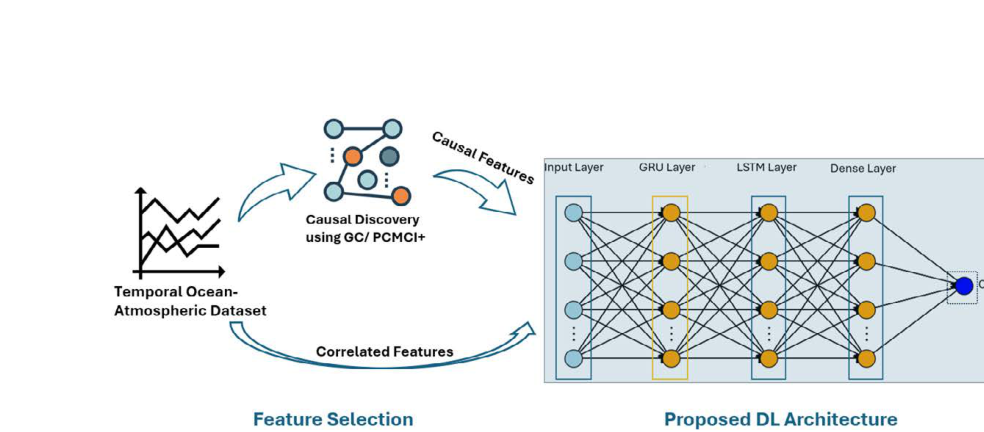
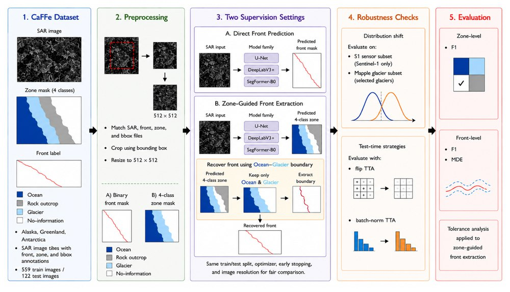
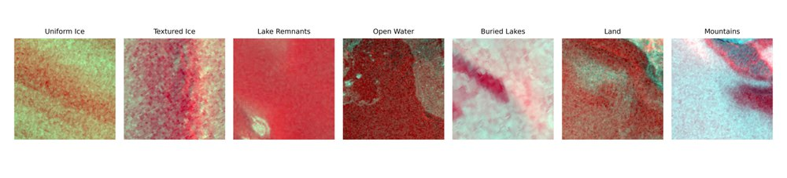
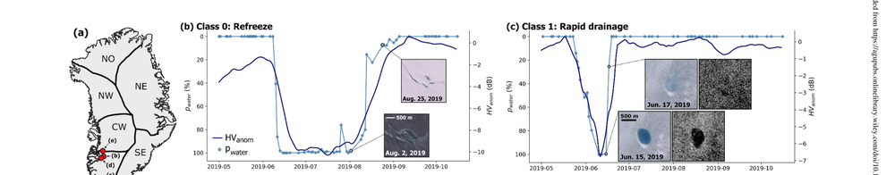
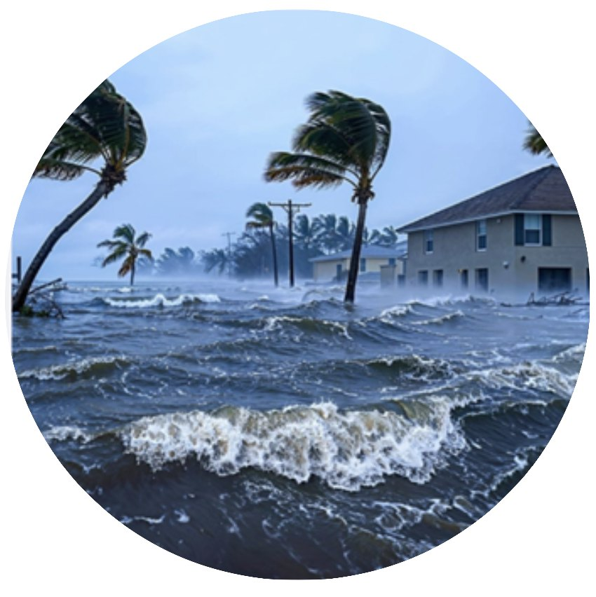

Research
Research
I develop interpretable, reliable, and robust machine learning by combining deep learning, causal inference, and domain knowledge. Polar science is my main testbed, because there the distribution shift comes from the physical system itself rather than from a simulation.

THEME 1
Causal representation learning with partial knowledge
Learning causal variables from raw data with partial expert knowledge and priced supervision.
See projects ↓
THEME 2
Causal discovery and time series under distribution shift
Recovering causal structure from time series and using it to predict reliably under shift.
See projects ↓
THEME 3
Reliable learning from satellite data
When predictions from satellite imagery and time series become trustworthy, and which models hold up.
See projects ↓
THEME 4
Benchmarks, challenges, and reproducibility
Re-implementing published methods under one protocol and running out-of-distribution challenges.
See projects ↓THEME 1
Causal representation learning with partial knowledge
Experts rarely know the full causal structure of a system, but they usually know part of it. I build models that learn high-level causal variables from raw data, use that partial knowledge, and price the supervision they need before paying for it.

PCG-VAE: Learning Causal Representations under Partial Structural Knowledge
Under review, CVPR 2027
Experts mark each causal link as known, forbidden, or unknown, and the model learns only the unknown ones. It recovers the hidden structure exactly in all 60 runs, compared with 3 of 20 for full discovery.

VLM-Gauge: Pricing Vision-Language Supervision for Causal Representation Learning
Under review, ICLR 2027
Uses a vision-language model as the annotator and prices its labels before training: a label of quality J is worth about J² human labels. Labels on 17,000 images beat human labels on 4,000, and twelve attributes are supervised jointly.
THEME 2
Causal discovery and time series under distribution shift
Correlations learned in one setting often fail in another, while causal relationships should be more stable. I study how to recover causal structure from time series and use it to build predictors that stay reliable where they were not trained.

Causal Time Series Modeling of Supraglacial Lake Evolution in Greenland under Distribution Shift
IEEE ICMLA 2025
Lag-aware causal graphs choose the predictors. Causal models beat correlation-based baselines in all six leave-one-basin-out tests, with accuracy gains of up to 12.59%.

TimeGraph: Synthetic Benchmark Datasets for Robust Time-Series Causal Discovery
ACM SIGKDD 2025, Datasets and Benchmarks Track
Benchmarks with known causal graphs plus real-world trends, seasonality, missing data, and hidden confounders. Under nonlinear dynamics, standard methods often find none of the true links.

Correlation to Causation: A Causal Deep Learning Framework for Arctic Sea Ice Prediction
IEEE PerCom Workshops 2025; extended at the IJCAI AI4TS Workshop 2025
Granger causality and PCMCI+ pick the drivers of Arctic sea ice extent from 43 years of ocean and atmospheric data, and a GRU-LSTM model with the causal inputs predicts more accurately across lead times.

A Survey on Causal Discovery Methods for I.I.D. and Time Series Data
Transactions on Machine Learning Research, 2023 (Survey Certification)
Maps what each family of causal discovery methods assumes, so a practitioner can see which assumptions their data break.
THEME 3
Reliable learning from satellite data
Satellite imagery and time series of the Greenland Ice Sheet come with scarce labels, class imbalance, and conditions that change from year to year. I study when predictions become trustworthy and which modeling choices actually hold up.
Supraglacial Lake Fate Is Knowable Long Before the Season Ends
ACM SIGSPATIAL Workshop on Polar Data Science (PolDS) 2026
How early can we trust a prediction? Rapid lake drainage becomes predictable by 15 July, 92 days before a full-season model can be applied, and the ordering holds across learners and basins.

Evaluating Zone-Guided Front Extraction for Glacier Calving-Front Delineation in SAR Imagery
IEEE ICMLA 2026
Tests whether zone labels can stand in for calving-front labels. Zone labels hold the boundary, but fronts from predicted zones stay weak, so zone scores should not replace front‑level evaluation.

Why Convolution Still Matters: Evaluating Inductive Biases in Cryospheric Image Classification
IEEE IGARSS 2026
A controlled comparison of convolutional, attention-based, and hybrid models on Greenland Ice Sheet imagery. AlexNet gives the best accuracy and macro-F1: more complex models are not automatically more reliable.

Greenland Ice Sheet Wide Supraglacial Lake Evolution and Dynamics: Insights From the 2018 and 2019 Melt Seasons
Earth and Space Science, 2025
Classifies every Greenland supraglacial lake in a low-melt and a high-melt season into four fates and releases the ice‑sheet‑wide dataset.
THEME 4
Benchmarks, challenges, and reproducibility
Trustworthy AI needs evaluation that matches how models are used. I re-implement published methods under one protocol and help run community challenges that score models on data they have never seen.
Evaluating a Benchmark Dataset for Supraglacial Lake Detection on the Greenland Ice Sheet
In preparation, Nature Scientific Data
Re-implements the five top-performing algorithms of the ACM SIGSPATIAL GIS Cup 2023 under consistent preprocessing and evaluation. I co-lead the reproducibility work and presented it in an invited flash talk at the FARR Workshop.

Predicting Coastal Flooding Events: Scientific Out-of-Distribution Challenge
Codabench, 2025–2026
As support team lead, I led the four-person team that implemented, ran, and evaluated the sub-challenge. It drew 2,709 submissions from 151 participants and scored every model on stations it never saw in training.
EARLIER WORK
Deep learning for forecasting (2019–2022)
Before my Ph.D. research, I worked on deep learning and expert systems for financial and environmental forecasting.
- ESWA 2022Machine Learning with Belief Rule-Based Expert Systems to Predict Stock Price Movements
Combines a belief rule-based expert system with machine learning for interpretable stock movement prediction.
- TCCE 2020A Novel Deep Learning Approach to Predict Air Quality Index
A hybrid GRU-LSTM network that follows air quality trends in Dhaka and Chattogram better than either model alone.
Papers by undergraduate students I advised are listed under Teaching & Mentoring.